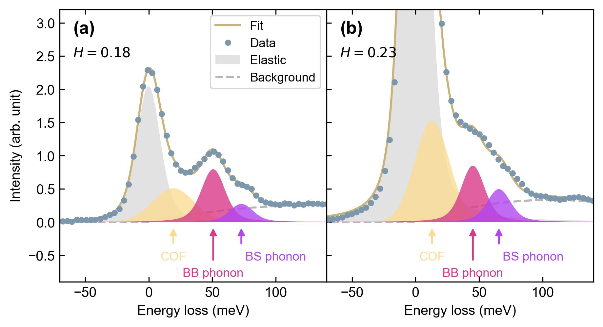

Separate the overlapping components.
Fit the elastic line, low-energy charge contribution, phonon peaks and background using the measured energy resolution. Compare how these components change with momentum and temperature.
The key analysis problem: several physical processes contribute to the same energy window.
